Fotografía Artística
La base de mi ojo: composición, color y luz. Del encuadre fotográfico aprendí a mirar antes de maquetar, y ese criterio se aplica igual a una página que a un cartel.
EASD València · Escola d'Art i Superior de Disseny
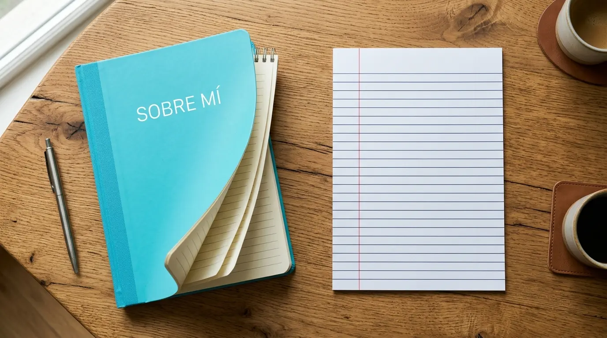
Nací en Valencia y siempre me ha gustado crear: contar historias con imágenes, tipografía y orden. Me formé en Diseño y Producción Editorial en el CIPFP Ciudad del Aprendiz —el proceso completo del producto editorial, del libro al catálogo— y en Fotografía Artística en la EASD, que me dio el ojo para la composición y la luz. Trabajo el estilo minimalista con corrección geométrica: retículas claras, pesos equilibrados y paletas complementarias, sin saturar. Mi criterio bebe del orden de la Bauhaus, la geometría de Mondrian, la tipografía de Vignelli y el fotomontaje de Josep Renau: sencillo, elegante y con intención. Me gusta resolver problemas: ordenar mucha información, elegir la tipografía justa y preparar el arte final para que cada pieza se lea, se entienda y dure. Diseño para la mano y para la pantalla, con el mismo cuidado en un folleto, un cartel o una marca.
Diseño editorial y gráfico aplicado: Folletos (dípticos y trípticos), Flyers, Pósters, Identidad corporativa, Otros productos y el proyecto personal de ilustración Universo encantado. Cada pieza, en su sitio y con su criterio.
Cartelería para festivales, deporte universitario y campañas. La imagen leída a distancia: contraste, escala y tipografía que funciona de lejos.
Dípticos y trípticos, folletos publicitarios y de producto. Plegados pensados para leerse de un vistazo y sostener la marca en la mano: retícula clara, jerarquía tipográfica y color medido.
Piezas de mano rápida y alto impacto: flyers de eventos, promociones y campañas. Composición directa, un mensaje por pieza y una llamada a la acción evidente.
Marcas y manuales de identidad: logotipo, versiones, proporciones, colores corporativos, tipografía y aplicaciones (papelería, señalética, rotulación). Un sistema antes que un adorno.
Displays y tótems para feria, packaging y piezas de gran formato. Diseño preparado para producirse: arte final, medidas reales y control de materiales.
Un recorrido por los trabajos más representativos de mi etapa como diseñador gráfico: folletos, flyers, carteles, identidad corporativa y proyectos editoriales. Puedes ojearlo aquí mismo.
Selección de piezas de diseño gráfico: editorial, identidad, cartelería y producto, presentadas como un portafolio de proyectos.
Ver portfolio (PDF) →Proyecto personal de ilustración y narrativa: un universo propio de personajes y escenas donde el dibujo, el color y la imaginación mandan. Aquí el diseño se vuelve historia.
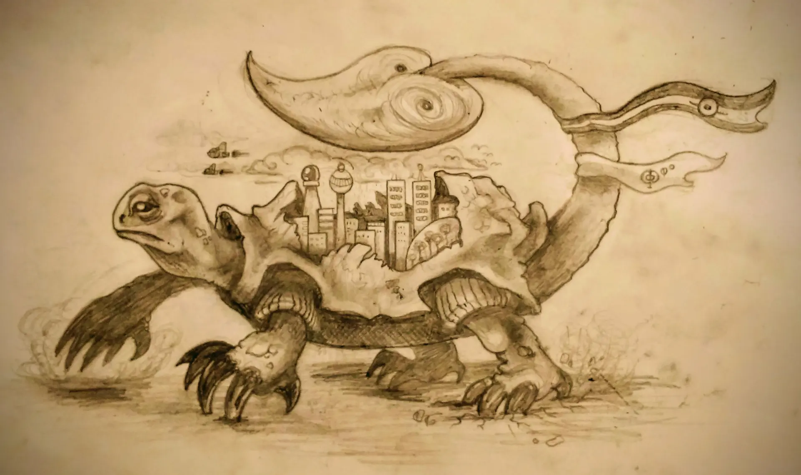
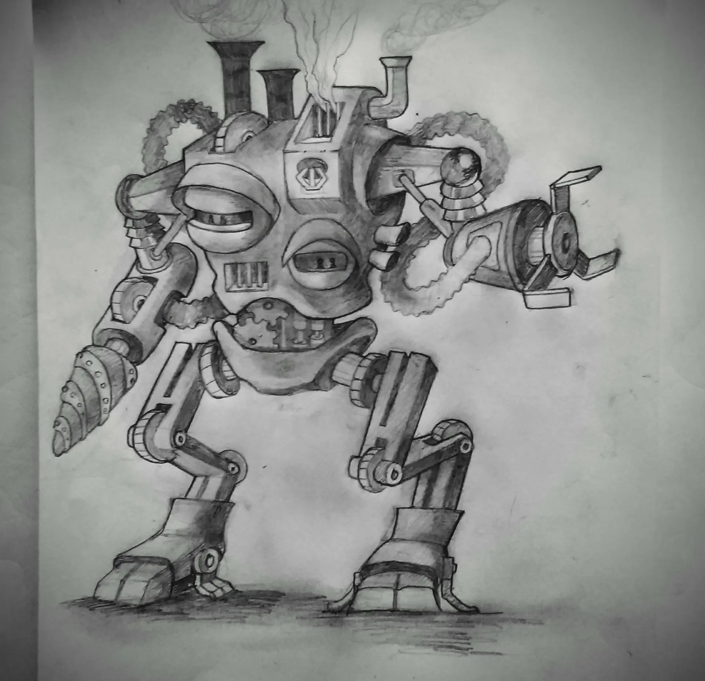
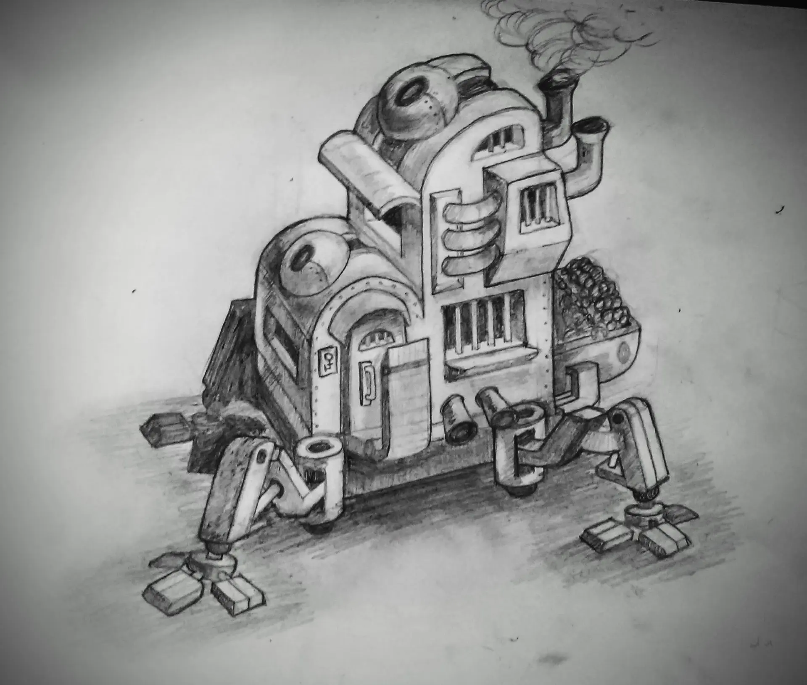
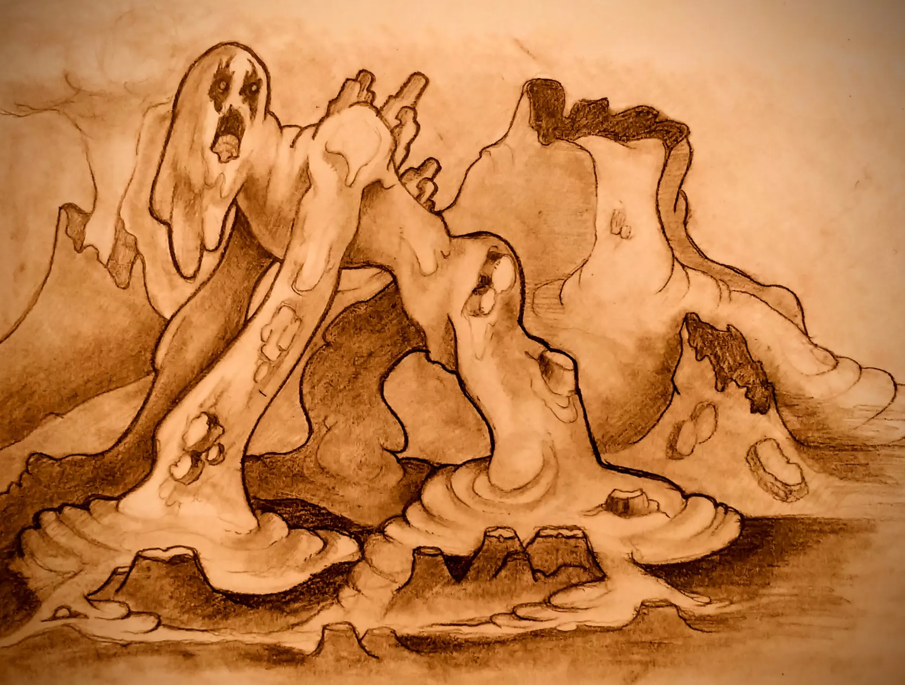
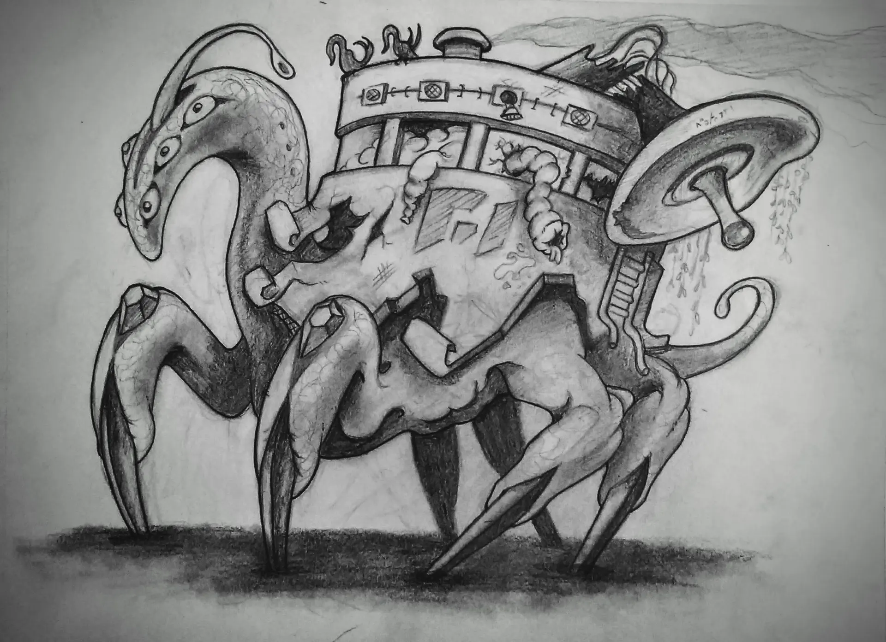
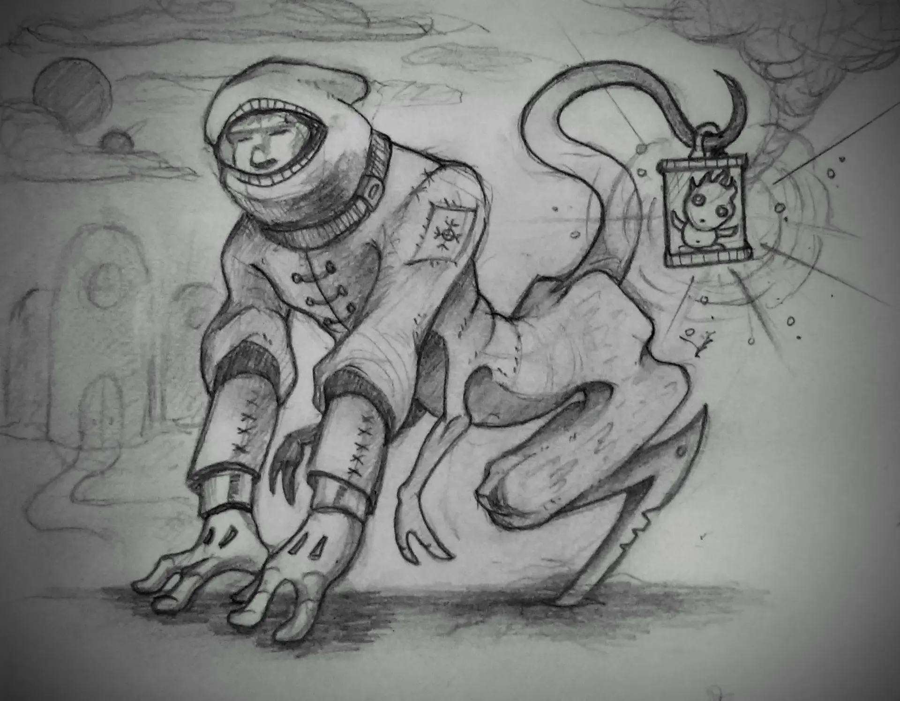
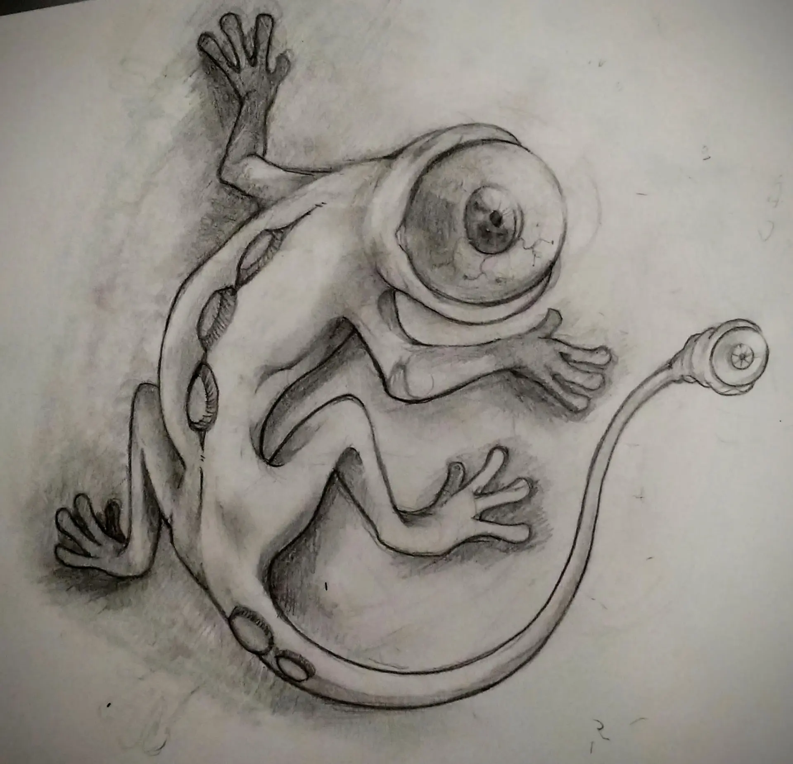
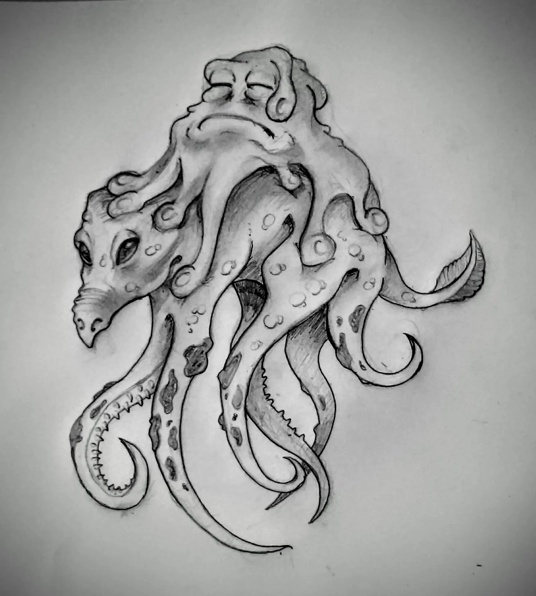
La base de mi ojo: composición, color y luz. Del encuadre fotográfico aprendí a mirar antes de maquetar, y ese criterio se aplica igual a una página que a un cartel.
EASD València · Escola d'Art i Superior de Disseny
 CIPFP
CFGS
CIPFP
CFGS
El ciclo que me formó como diseñador: el proceso completo del producto editorial —libros, catálogos, folletos—, del concepto y la retícula al arte final y la imprenta.
CIPFP Ciudad del Aprendiz
Mi caja de herramientas para el diseño: la suite de Adobe, de la ilustración vectorial a la maquetación y la publicación interactiva.
Dos ámbitos, un mismo criterio. Comunicación visual del deporte universitario en el Servei d'Esports de la Universitat de València, y dirección de la imagen corporativa y la comunicación de producto en Weidner Ibérica y Weidner México. En cada encargo: concepto, retícula, arte final y entrega lista para imprimir o publicar.
Prácticas de diseño y comunicación visual en el Servei d'Esports de la Universitat de València: cartelería, publicaciones y aplicación de marca.
uv.es/sesport →

Prácticas en el Servei d'Esports de la Universitat de València. Diseñé la comunicación visual del servicio: carteles y flyers de competiciones y actividades, una revista interna de deportes y la cabecera de sus redes. También adapté la iconografía de la mascota de la UV a todas las disciplinas deportivas, sobre fondo blanco, para un uso coherente y versátil.
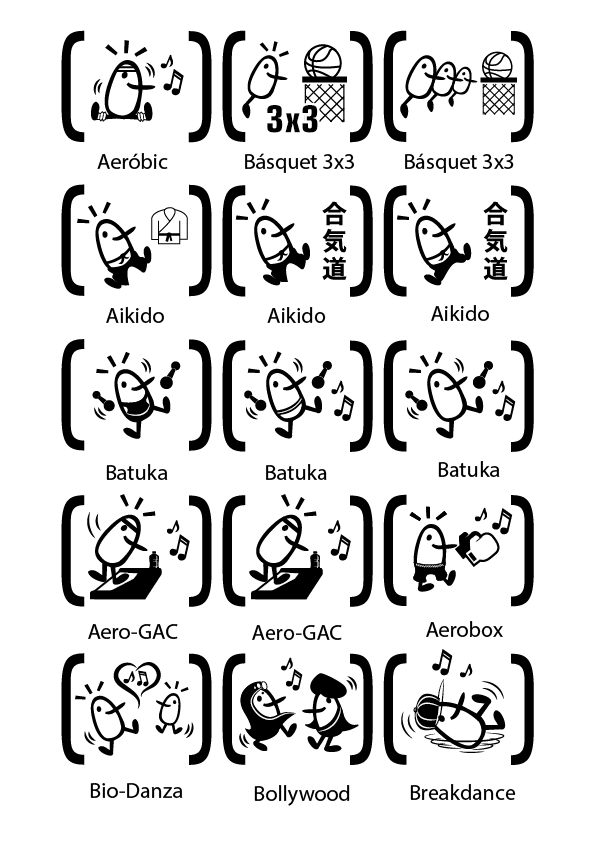
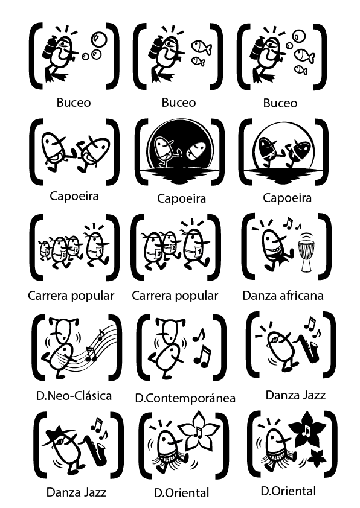
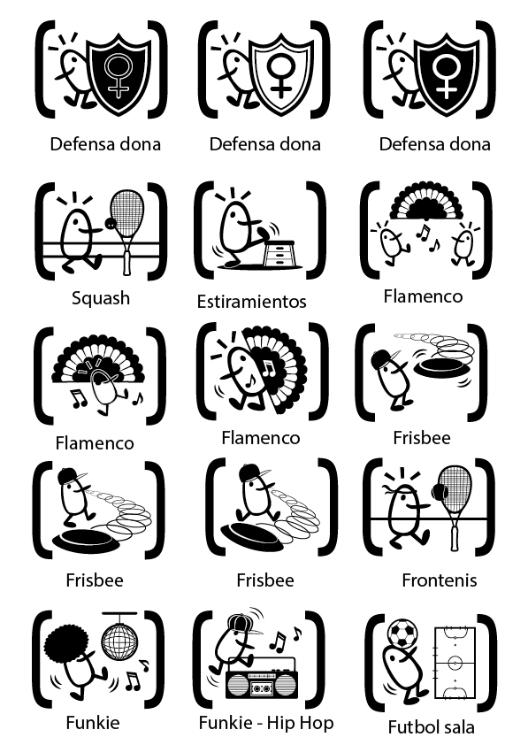
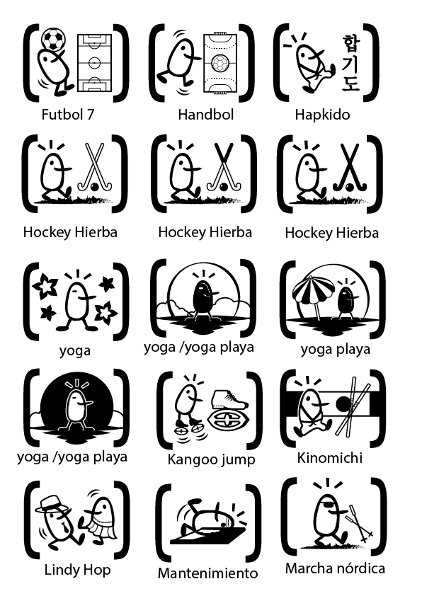
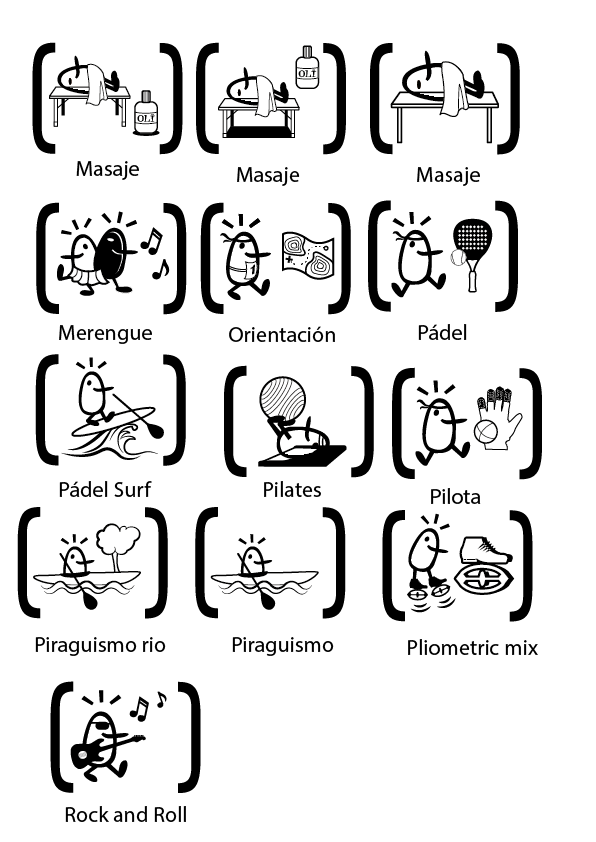
Tres encargos reales, contados por lo que resolvieron. Las cifras son métricas propias de cada entrega.
Una empresa industrial con sede en España y México, sin un sistema visual común ni un catálogo unificado de producto.
Identidad corporativa, plantillas editoriales y catálogos interactivos con una norma de color y tipografía única para ambas marcas.
Una imagen coherente y multiplataforma, del papel a la pantalla.
El Servei d'Esports necesitaba una imagen homogénea y reconocible para su calendario de actividades y competiciones.
Sistema de carteles y flyers, revista interna y adaptación de la mascota UV a cada disciplina deportiva.
Una identidad deportiva única y fácil de aplicar por el propio servicio.
Contenido denso —precios, horarios, recetas, producto— que debía seguir siendo legible, atractivo y bien plegado.
Retícula editorial, jerarquía tipográfica y arte final preparado para imprenta, con control de plegados y sangrados.
Folletos y trípticos listos para producir, con acabado profesional.
Como encargado de la imagen corporativa de Weidner Ibérica y Weidner México, desarrollé la identidad visual de la empresa y su comunicación de producto: catálogos impresos e interactivos, displays y tótems para ferias de automoción, tarjetas de visita y firmas de correo. Aquí tienes el resultado: catálogos navegables y presentaciones de producto.
Fabricante español de productos plásticos para la industria logística y de automoción, con central en Carlet (Valencia). Encargado de su imagen corporativa y comunicación de producto.
weidneriberica.com →Filial mexicana del Grupo Weidner. Identidad visual y comunicación de producto: catálogos, displays y presentaciones.
weidner.mx →Catálogo publicado con Adobe Publish Online: navegable, con interactividad y enlaces internos. La versión digital del catálogo de producto, pensada para consultarse desde cualquier dispositivo.
Abrir catálogo interactivo →Catálogo de producto en formato flipbook (Flipsnack). Maquetación editorial del catálogo completo: fichas técnicas, familias de producto y una navegación pensada para venta.
Abrir catálogo de producto →Presentación de producto sostenible en formato flipbook (Flipsnack): economía circular, materiales reciclados y soluciones verdes para el sector. Diseño al servicio de un mensaje medioambiental.
Abrir presentación →Presentación de producto del palé modular LogicPalet, premiado como mejor invención española. Maquetación técnica bilingüe: características, ventajas logísticas, montaje en tres pasos y fichas de producto.
Ver presentación (PDF) →Presentación de soluciones sostenibles para el sector alimentario (bandejas, pelotas de pádel y tenis, cepillos). Maquetación editorial que traduce un mensaje de economía circular —reciclar, reutilizar, recuperar— en piezas claras y visuales.
Ver presentación (PDF) →Retículas, folletos y catálogos: ordenar mucha información sin ruido.
Marcas y manuales: un sistema que se aplica igual en papel y en pantalla.
Del boceto al arte final: crear la imagen cuando no existe.
Jerarquía, contraste y paletas complementarias con criterio.
Pit stop para imprenta: sangrados, perfiles y control de color.
Carteles, tótems y piezas de feria pensadas para producirse.
De la geometría de Mondrian a la memoria visual de Kim Jung Gi: maestros de los que heredo el criterio, no la copia.
La retícula como lenguaje: orden, equilibrio y color puro en el espacio.
Forma y función unidas: la escuela que enseñó a diseñar con método.
Dibujar de memoria, sin boceto: perspectiva y confianza en el trazo.
La tipografía como sistema: claridad, disciplina y coherencia total.
Una idea, una imagen: el poder de la síntesis gráfica.
El cartel como arma y arte: fotomontaje, compromiso y oficio valenciano.
Muestras en vivo de Google Fonts e iconografía animada con Lordicon: dos librerías gratuitas que uso en prototipos.
Animaciones Lottie de Lordicon (plan gratuito)